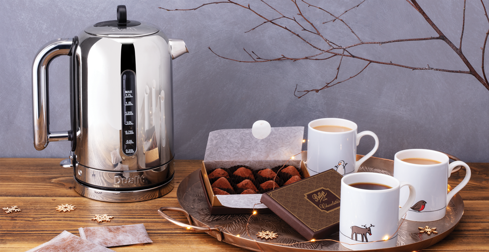

팁 / 가이드
전기포트
딱 맞는 전기포트 고르기

전기포트를 구매 시에는 사용자의 특성, 필요 기능, 스타일 그리고 아래의 항목들을 고려해야 한다.
- 출력
-
대부분 전기포트의 출력은 2,300W~3,000W 내외로 출력이 높을수록 물이 더 빨리 끓는다.
전기포트에 보온 기능이 있으면 지속적으로 전력이 소모 된다고 보면 된다.
- 소음
-
가열시 나는 소리의 데시벨이 표시 되어있는지 확인한다.
일반적인 대화 소리는 60dB 정도이고 전동 드릴 소음은 최대 95dB임을 참고하면 된다.
- 용량
-
전기포트에 담을 물의 양을 컵의 수로 나타내는 창이 있으면 필요한 양만 끓일 수 있다.
주로 필요한 물의 양에 따라 전기포트의 용량을 결졍하도록 한다.
- 무게
-
보통 플라스틱제가 금속제보다 가벼우므로 전기포트의 소재를 살펴보도록 한다.
주전자 용량도 무게에 영향을 미치는데, 물 1ml 무게는 1g에 해당하므로 물 2L가 2kg라는 사실을 염두하도록 한다.
- 색상
-
선명하거나 부드러운 색상 또는 메탈릭 쉐이드 등 주방 인테리어에 딱 맞는 색상을 선택하거나 무난한 클래식 색상을 선택할 수 있다.
폴리싱, 브러싱 처리 및 유광, 무광 처리 등 역시 다양하게 고를 수 있다.
- 사용 편의성
-
핸들 잡기가 쉬운지, 너클 가드처럼 안전 장치가 있는지 고려한다.
손으로 잡고 열어야 하는 경우 뚜껑에 버튼이 있으면 더 쉽게 조작이 가능하다.
- 세척
-
세척이 가능한 탈착형 물 때 필터가 장착된 전기 전기포트는 많지만, 탈착 용이성은 제품에 따라 차이가 있다.
플라스틱 전기포트는 젖은 천으로 쉽게 닦이지만 금속제 전기포트는 닦은 후 물 자국을 제거하기 위해 부드러운 마른 천으로 다시 닦아줘야 된다.
주둥이에서 물이 떨어지면 물때가 쌓이기 때문에 흘림 방지 기능이 있는 전기포트를 사용하도록 한다.
- 내구성
-
이음매를 잘 살펴본다. 뚜껑 경첩은 물을 끓일 때마다 열고 닫아야 하기 때문에 다른 부품보다 움직임이 많다.
경첩이 얇고 열린 상태에서 비틀었을 때 뚜껑이 구부러지면 부러질 가능성이 높다.
국문 English 공백 포함 최대 30자 한 줄 노출
-
 클래식 토스터 Classic Toaster 메탈 브론즈
클래식 토스터 Classic Toaster 메탈 브론즈
Metal Bronze 4구 28% 351,200 439,000 -
 클래식 토스터 Classic Toaster 메탈 브론즈
클래식 토스터 Classic Toaster 메탈 브론즈
Metal Bronze 4구 28% 351,200 439,000 -
 클래식 토스터 Classic Toaster 메탈 브론즈
클래식 토스터 Classic Toaster 메탈 브론즈
Metal Bronze 4구 28% 351,200 439,000 -
클래식 토스터 Classic Toaster 메탈 브론즈
Metal Bronze 4구 28% 351,200 439,000 -
클래식 토스터 Classic Toaster 메탈 브론즈
Metal Bronze 4구 28% 351,200 439,000 -
클래식 토스터 Classic Toaster 메탈 브론즈
Metal Bronze 4구 28% 351,200 439,000 -
클래식 토스터 Classic Toaster 메탈 브론즈
Metal Bronze 4구 28% 351,200 439,000 -
클래식 토스터 Classic Toaster 메탈 브론즈
Metal Bronze 4구 28% 351,200 439,000 -
클래식 토스터 Classic Toaster 메탈 브론즈
Metal Bronze 4구 28% 351,200 439,000